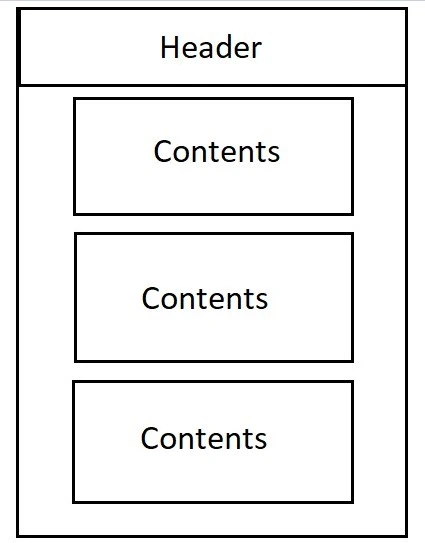
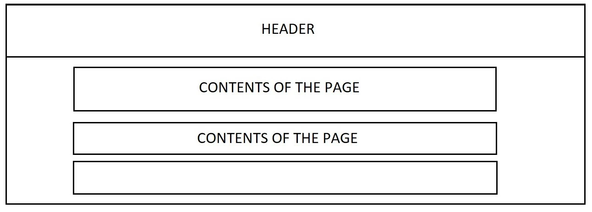

Name: Art and Culture Hub
Reason: This name was chosen to represent a platform that highlights the rich cultural heritage and contemporary art scene of Lagos. It resonates with the target audience and the site’s purpose.
Optional Domain: https://drex15.github.io/wdd131/projects/siteplan
The purpose of this website is to serve as a hub for showcasing Lagos’s cultural heritage and contemporary art scene. It will include sections on traditional art forms, modern artists, galleries, cultural festivals, and workshops, fostering appreciation and participation in the arts.
Primary Color: Maroon (#800000) – Used for headings, navigation bar, and accents.
Secondary Color: Light Gray (#f4f4f4) – Used for the background and complementary elements.
Primary Font: Arial, sans-serif – Used for body text.
Secondary Font: Georgia, serif – Used for headings and special emphasis sections.
Below are wireframe sketches for the homepage in both mobile and desktop views:
 